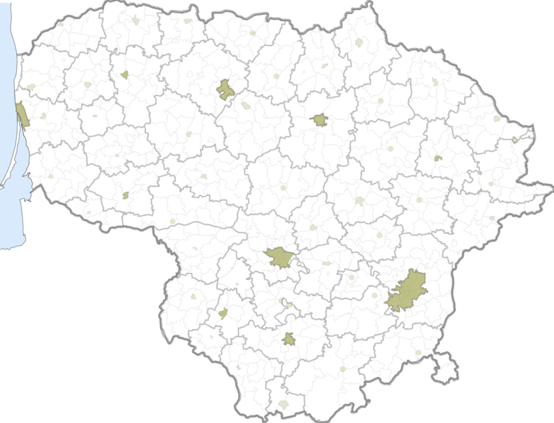

Sostinė
Vilnius – Lietuvos sostinė ir didžiausias šalies miestas,
Vilniaus apskrities, rajono ir miesto savivaldybės centras.
Įsikūręs šalies pietryčiuose, Neries ir Vilnios santakoje.
Vilnius yra arkivyskupijos centras, nuo 1579 m. –
universitetinis miestas.
Sostinėje veikia aukščiausios valdžios institucijos –
Prezidentūra, Seimas, Vyriausybė, ministerijos, Aukščiausiasis
ir Konstitucinis teismai, užsienio valstybių ambasados ir
atstovybės, diplomatinės misijos, tarptautinių organizacijų
atstovybės.
Vilniaus senamiestis yra vienas didžiausių Rytų Europoje ir 1994
m. įtrauktas į UNESCO Pasaulio paveldo sąrašą.

© Eidenis Kasperavičius „Vaivorykštė“ 2017-2018
Į pradžią